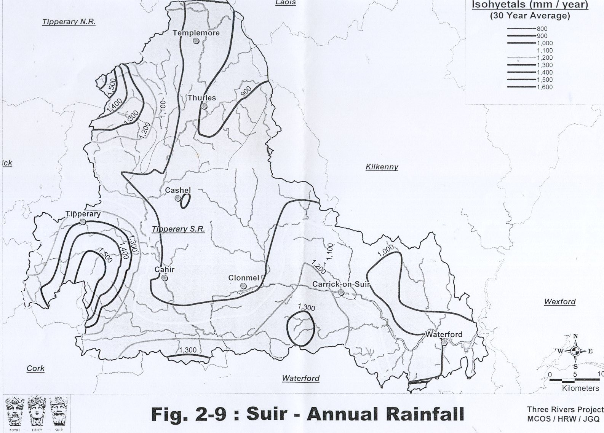
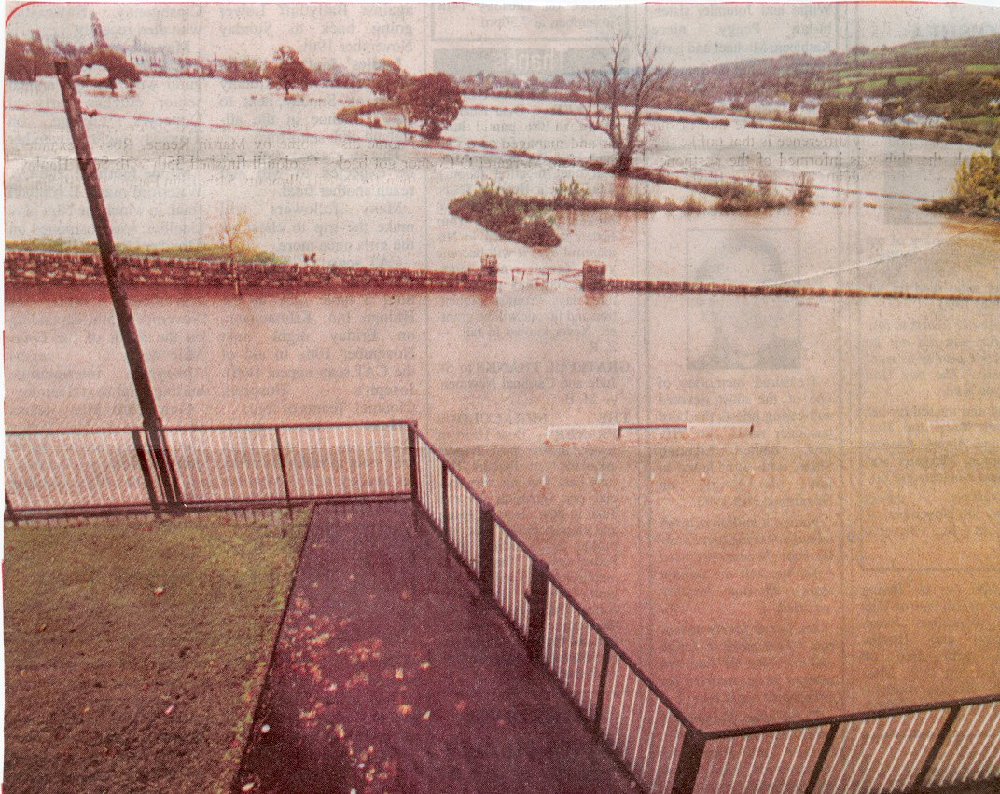

In order for flooding to occur, there has to be an increase in the amount of rainfall experienced in an area. During times of flooding in Clonmel, there has always been exceptional rainfall in the lower regions of the river Suir catchment. This year alone has experienced the worst floods in living memory since 1946.

Clonmel is situated in a valley on the banks of the river Suir. As a result, its surrounding tributaries flow down towards the town. However, during times of torrential rainfall, the speed at which these rivers flow is greatly increased and the excess flow results in large volumes of water entering the Suir, causing the river to burst its banks.

A view from the Presentation Secondary School during flooding.
<
Previous> <Index> <Next>